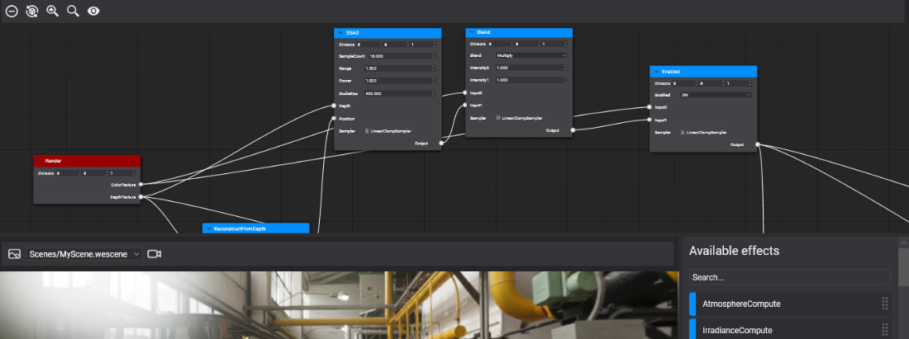
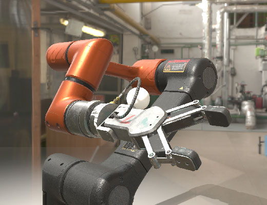

Post-Processing Graph

Post-processing applies screen-space effects to a camera's image after the scene has been rendered and before it reaches the screen: tone mapping, anti-aliasing, ambient occlusion, reflections, depth of field, bloom and more. In Evergine these effects are organized as a post-processing graph, a network of nodes where each node is a compute effect that reads textures produced by earlier nodes and writes new ones.
| Post-processing disabled | Post-processing enabled |
|---|---|
 |
How it runs
A graph starts at the Render node, which provides the camera's color and depth, and ends at the Screen node. Every node between them is dispatched in dependency order on the GPU.
The graph runs as the last step of the camera's Default pass (see Rendering Overview), so it needs the camera's intermediate buffer, and effects that read normals or motion vectors also need the GBuffer pass. Both are available on the default Windows configuration; a camera rendering straight to its target skips post-processing.
A graph is applied to the scene by a post-processing volume: an entity with a PostProcessingGraphRenderer component. The volume can affect every camera or only the cameras inside it. See Using the Post-Processing Graph.
The default graph
The Evergine.Core package includes a ready-made graph with the most common effects, each behind a switch, and new volumes use it unless you choose another. Most projects only tune its parameters; you build your own graph to add new effects or to strip the chain down for performance. See Default Post-Processing Graph.